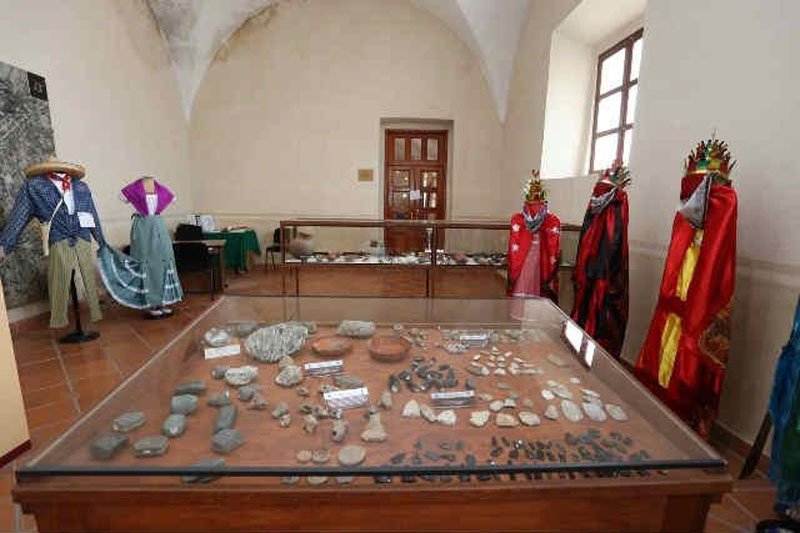
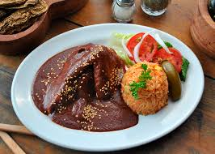

ATLIXCO,PUEBLA
Ulises Armando Velazquez Mejia

Se ubica a 25 km de la ciudad de Puebla, capital del Estado y cuenta con dos importantes vías de acceso: la Carretera Federal 190 y la moderna Autopista Vía Atlixcáyotl. Actualmente, es una moderna ciudad con más de cien mil habitantes, que ha logrado armonizar su desarrollo urbano con el majestuoso legado de arquitectura colonial que dejaron sus fundadores (1579), y que hoy es uno de los principales atractivos turísticos de este municipio.

MUSEOS
El Municipio de Atlixco cuenta con el Museo Obrero; ubicado en el interior del Centro Vacacional IMSS Metepec. También cuenta con una Casa de Cultura; ubicada en el edificio que fuera fábrica textil "El Carmen". Obras de Arte (Literatura, Música y Poesía) En el género literario: "Devoluciones Varias" de María Aguilar; "El Peso", cuento de Ignacio Rodríguez; "Anales de Tlatelolco", de Salvador Toscano. En el género poético encontramos los escritos de Ignacio Pérez Salazar Osorio como son: "Álbum de Viajes Juveniles", "Ayes del Alma" y "Troqueles Antiguos", "El Triunfo de la Humanidad" de Sol Micaela. En el género musical, "Cuando yo muera", "Ramona", "Río Rosa" y canciones varias de Amado R. Vicario
ARTESANIAS
Dentro de las artesanías destacan los utensilios de barro natural y de barro policromado, camisas bordadas y velas. Otros Atractivos Turísticos En Atlixco, camino a Tochimilco, están los viveros de la Colonia Cabrera, en los que se producen plantas y flores de todo tipo. En el municipio de Axocopan hay unos manantiales de agua fría mineral carbonatada y es un lugar rústico que cuenta con alberca de aguas medicinales. También está el Centro Vacacional Metepec, a 7 km. al noroeste de Atlixco, antigua fábrica de hilados y tejidos que hoy en día es uno de los balnearios más importantes del estado, debido a sus magníficas instalaciones. La Cascada de San Pedro Atlixco (de aproximadamente 15 m de altura) se localiza al noroeste y desde ahí se puede disfrutar de un bello paisaje de pinos y encinos. Por último, en los alrededores de Atlixco hay diversos balnearios y centros recreativos, donde se puede pescar, rentar lanchas, acampar y cuentan con servicios adicionales.
GASTRONOMIA
Alimentos: Sobresalen el consomé atlixquense, la cecina, los tamales de comino, los tlacoyos, la trucha preparada. Dulces: Jeripa (dulce de color rosa, elaborado con harina de arroz, leche y yemas de huevo; se sirve en cazuelas de barro y se espolvorea con ajonjolí), doradas y azucaradas de trigo. Bebidas: Atole de arroz y Chileatole y deliciosas nieves de sabores.

Atlixco, nuevamente estará llena de la luz. Te esperan noches llenas de color que harán que pases una grata estancia, caminando por sus calles que te deslumbrarán a cada paso. La “Villa Iluminada” es un recorrido que resalta la belleza arquitectónica de esta ciudad, embelleciéndola con luz. Durante más de cuarenta días las calles formarán un circuito de luz y color, vestidas de figuras y escenas alusivas a la navidad, las tradiciones y la identidad de la ciudad.


CTTis No.16
Nombre del alumno: ULISES ARMANDO VELAZQUEZ MEJIA
Nombre del profesor: JOSE ANTONIO GOMEZ HERMANDEZ
Elaborado por: ULISES ARMANDO VELAZQUEZ MEJIA
Modulo: DESARROLLA APLICACIONES MOVILES
Especialidad: PROGRAMACION
Semestre: 4 GRUPO: "G"
FEBRERO-JULIO 2016